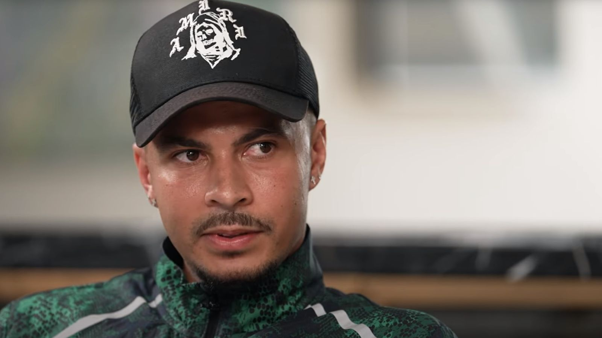

Dele Alli was one of the most prominent rising stars for England, however, behind what seemed like every young boy’s dreams of becoming a footballer hid childhood trauma, abuse, addiction, mental health challenges, and psychological pressures for one of England’s most promising footballers. On the outside at Tottenham, Alli seemed like a confident and charismatic young man that was unstoppable on the field; however, behind this image was a boy carrying painful childhood memories that he rarely brought up in public.
Dele Alli was born on April 11, 1996, in Milton Keynes, England to a Nigerian father and English mother. At a very young age, his parents separated, and Dele would often live for periods of time with different family members, sometimes even moving to Nigeria to live with his father. In a 2023 interview on The Overlap, Dele explains that his mother struggled with alcohol addiction and while he was with her, he experienced serious abuse and very dangerous conditions unfit for a kid to grow up in.
At the age of 6, Dele was sexually abused by a friend of his mother, and at the age of 7, he began to smoke cigarettes under the influence of irresponsible parenting. He was involved in transporting and selling drugs and at the age of eleven, had his life threatened because of what this troubled path brought. Thankfully, at the age of 12, he would move in with his childhood friend’s parent’s, being provided a stable and supportive home allowing him to focus on just being a regular kid.
One of the biggest affects that Alli discloses in his interviews is the sexual abuse he suffered as a 6-year-old kid. Dele describes himself being regularly visited by the perpetrator at his mother’s house and nobody around him was there to protect his safety. During that time, Dele didn’t fully understand what was happening, however, this still deeply traumatized him and would emotionally affect him in adulthood.
Childhood sexual abuse can have severe lasting consequences for emotional regulation, trust, maintaining relationships, and a person’s confidence in their safety into adulthood. Dele didn’t publicly disclose this information until years after his career had already been secured, highlighting just how much even the stars you watch and idolize can be going through behind all the noise.
Living with his childhood friend’s family, the Hickford family, completely changed Alli’s life. Dele spoke with extreme gratitude towards them, explaining how they transformed his life and provided the stability he previously lacked, allowing him to pursue his dreams of becoming a footballer. Yet, although he was in a loving family now, he still had unaddressed trauma that was difficult to open up about, fearing that he would lose the family he has grown attached to if he were to talk to them about it.
Football became Dele’s anchor and way to vent his pent up frustrations. He joined the youth system at MK Dons, developing into a promising midfielder. His talent would lead him to having his professional debut at only sixteen, and very quickly, he would establish himself as one of the best on MK Don’s first team.
His performance would gain the attentions of Premier League clubs, with Tottenham Hotspur signing him on February 2015. Dele’s transition to what is considered the most competitive league in the footballing world was very successful, with his 2015-2016 premier league season leading to 10 goals. He would quickly establish himself as England’s most promising stars and would be named PFA Young Player of the Year in 2016.
In the following year, he would break his astonishing start with flying colors. At 21, Dele was in conversations of being one of England’s greatest midfielders, making Tottenham a powerhouse of a club with the other footballing stars Harry Kane, Christian Eriksen, and Son Heung-min.
Dele would be apart of the 2018 World Cup England Squad, helping the team reach the semi finals and scoring against Sweden in the quarterfinals. He would later help Tottenham reach the UEFA Champions League Final.
On the outside, Dele looked like he had everything: international recognition, success, fame, millions of supporters, and a bright career ahead of him.
However, when Dele would open up in interviews later on in his career, what seemed like shiny accolades would spread apart to reveal emotional suffering, insecurity, and mental health hardships that were unknown to the public and a lot of Dele’s friends and family.
In November of 2019, Tottenham dismissed the head manager, Mauricio Pochettino, a vital mentor to Dele’s development. Without the manager, Dele talked about struggling emotionally with this decision. Pochettino’s relationship with Dele extended far beyond football. He was the person that believed in Dele, and who supported him to his rise to stardom. When Jose Mourinho replaced Pochettino, Dele’s relationship with Tottenham and his teammates began to change.
Dele’s performances plummeted and become much more inconsistent, with Mourinho publicly calling out Dele’s work ethic and performances, leading to Dele fading from the spotlight and a bad light being painted on him. As his performances continued to decline from public criticism and an unoptimal working environment, criticism intensified. Supporters and commentators questioned his ambition to be a footballer, and his professional, with some even arguing that after he achieved stardom, he became complacent.
During this period of criticism, Dele hadn’t revealed a lot of the difficulties he was experiencing beyond football. At the age of 24, he remembers contemplating retirement. Dele began to lose his identity as an athlete, slowly drifting away from the dream that he always held onto as a child as people all around him continued to question if he really had what it took to stay on the top.
All these pent up struggles would lead Dele to spiral, with him publicly revealing in 2023 that the criticism would lead to his sleeping-pill addiction. Initial backlash would lead him to be prescribed sleeping medication, however, his use would escalate as time went on and he would obtain sleeping pills outside his normal prescription.
The pills were no longer meant to help him sleep, but to numb his feelings and escape the painful memories and emotions that he kept pent up inside him.
Even while Dele was struggling with this, he continued to smile in public, attending trainings and interacting with teammates with his standard charismatic and jolly attitude. Dele described feeling trapped in this endless cycle, and feeling like he had to manage all these difficulties along.
Then, in 2022, Dele would leave Tottenham for Everton, later joining a Turkish club on loan the same year. He struggled to rediscover the player he had been all those years ago. Injuries would hinder his performance and with the possibility of surgery later on, Dele entered another difficult period in his career.
In 2023, Dele would take the first step, voluntarily entering rehabilitation in the United States and spending six weeks receiving treatment for his addiction, mental health difficulties, and pent-up trauma. He participated in therapy, and interacted with people who also had dealt with experiences just like him which formed trauma far into adulthood.
One of the most significant realizations for Dele was that he wasn’t alone.
For years, Dele struggled with his hardships independently, believing that nobody around him could sympathize with him and understand what he was going through. However, through treatment, he began exploring the experiences which he had suppressed deep within him. Dele began to recognize how childhood experiences had affected future behavior and would eventually appear on Gary Neville’s The Overlap, to finally share his story with the rest of the world.
Dele explained that he chose to speak out because he learned how important and beneficial it was for people to know that others struggled with the same experiences as them and they were not alone. The experiences they faced were not a sign of weakness, but a sign of the strength to push forward.
References
Sources
- Evening Standard — Dele Alli's Full Interview with Gary Neville (2023) (external link)
- BBC Sport — Dele Alli Reveals Childhood Sexual Abuse (2023) (external link)
- The Guardian — Dele Alli Reveals Childhood Abuse, Addiction, and Rehabilitation (2023) (external link)
- Premier League — Dele: Getting Help Doesn't Make You Weak (2023) (external link)
- BBC Sport — Sleeping-Pill Addiction in Professional Football (2023) (external link)
- Tottenham Hotspur — Dele Named PFA Young Player of the Year (2017) (external link)
- BBC Sport — Dele Alli Discusses Recovery and England Ambitions (2024) (external link)